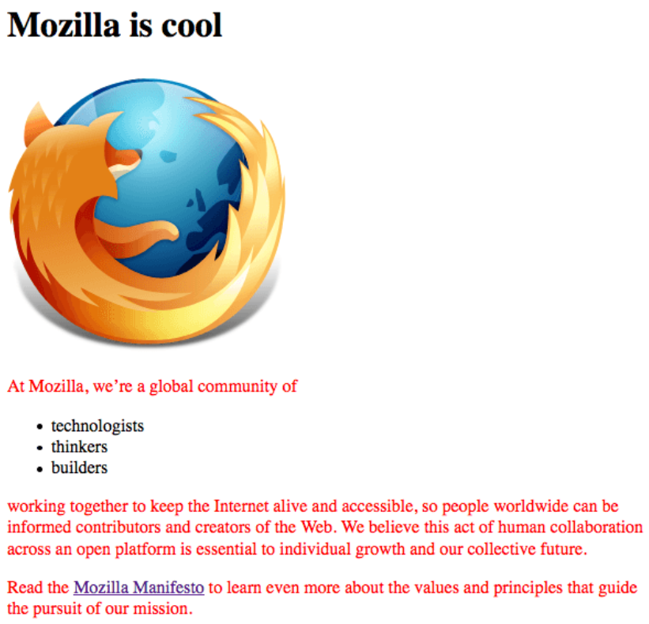
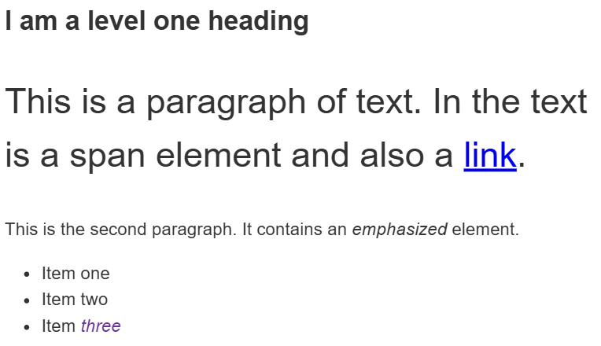
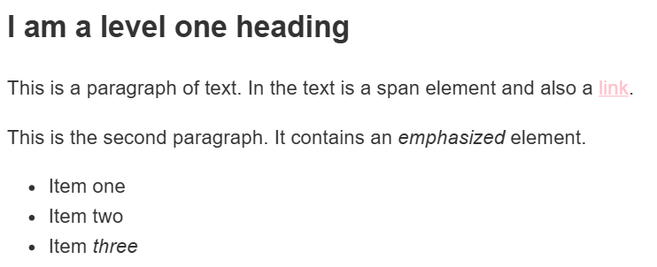
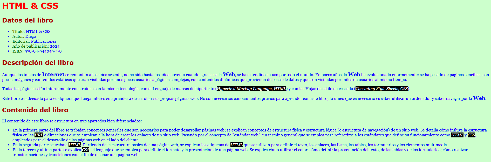
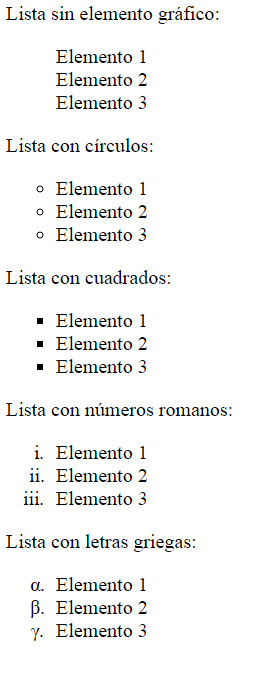
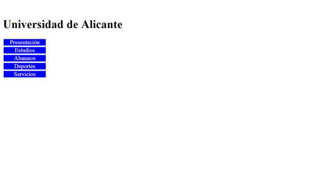
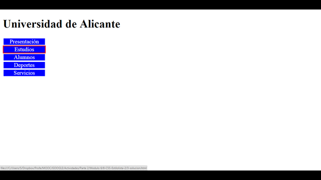
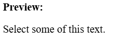
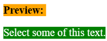

LM · Tarea
CSS 1..16
Instrucciones
Resuelve los 16 ejercicios de CSS de las diapositivas. Cada apartado mantiene su número e incluye el enlace a su enunciado.
Los ejercicios 1, 15 y 16 parten de tu página Mozilla del ejercicio 1 de HTML. Para los ejercicios 2–3 y 5–7, descarga los HTML de partida.
Ejercicio 1
Párrafos de color rojo
Modifica la página Mozilla del ejercicio 1 de HTML para que todos sus párrafos se muestren en rojo. Aplica el cambio mediante CSS.

Ejercicio 2
Selectores y combinadores
Utiliza el archivo selectores.html de los materiales de partida. Escribe las reglas CSS necesarias para cumplir estas condiciones:
- El texto de cualquier
<em>dentro de un<li>debe aparecer en colorrebeccapurple. - El primer párrafo
<p>situado inmediatamente después del<h1>debe tener un tamaño de fuente del 200 % del tamaño predeterminado. - Los
<span>que estén dentro de un párrafo deben tener el texto rojo. - El
<span>del primer elemento de la lista debe conservar su color: la regla anterior solo afecta a los que están dentro de párrafos.

Ejercicio 3
Estados de los enlaces
Sobre la página de ejemplo selectores.html, crea un archivo CSS que aplique estos estilos a los enlaces:
- Enlaces no visitados (
:link): color rosa. - Enlaces visitados (
:visited): color verde. - Al pasar el ratón (
:hover): sin subrayado.

Ejercicio 4
Practicar los distintos selectores
Crea un HTML sin estilos y escribe reglas CSS que utilicen los siguientes selectores:
h1a:link.manythings#onething*.box p.box p:first-childh1, h2, .intro
Incluye en tu HTML los elementos, las clases y el identificador necesarios para comprobar qué selecciona cada regla.
Ejercicio 5
Estilos de una página sobre un libro
Parte del archivo libro.html de los materiales. Crea una hoja externa llamada estilos.css y enlázala desde el HTML mediante <link>. Reproduce la presentación del libro que aparece en la captura del ejercicio 7.
Texto principal
- Color del texto: azul,
#00F. - Color de fondo: verde claro,
#CFC. - Familia tipográfica:
Georgia, Cambria, serif. - Tamaño:
16px.
Encabezado de nivel 1
- Color rojo:
#F00. - Familia tipográfica:
Verdana, Calibri, sans-serif. - Tamaño:
32px.
Encabezados de nivel 2 y fragmentos de texto
- Los encabezados de nivel 2 deben usar el color
#A00, la familiaVerdana, Calibri, sans-serify un tamaño de24px. - Los nombres de los campos de los datos del libro deben aparecer en verde oscuro,
#060. - Las palabras Internet y Web, cuando actúan como sustantivos, deben mostrarse a
20pxy en negrita. - Los textos Hypertext Markup Language y Cascading Style Sheets, y los acrónimos HTML y CSS del texto, deben aparecer en blanco (
#FFF), sobre fondo negro (#000) y en cursiva.
Puedes utilizar <span>, <em> y <strong> para aplicar estilos a fragmentos concretos.
Ejercicio 6
Encabezados y fragmentos destacados del libro
Continúa sobre la página del libro del ejercicio anterior. Este apartado vuelve a trabajar los estilos de los encabezados y los fragmentos destacados:
- Aplica a los encabezados de nivel 2 el color
#A00, la familiaVerdana, Calibri, sans-serify el tamaño24px. - Muestra los nombres de los campos de los datos del libro en verde oscuro (
#060). - Da un tamaño de
20pxy negrita a Internet y Web cuando se usan como sustantivos. - Aplica texto blanco, fondo negro y cursiva a Hypertext Markup Language, Cascading Style Sheets, HTML y CSS en el texto.
Comprueba que las reglas afectan a los fragmentos indicados y que el resto de la página conserva sus estilos.
Ejercicio 7
Reproducir la página del libro
Reproduce con HTML y CSS el aspecto de esta página. Utiliza el contenido de libro.html y los requisitos de los ejercicios 5 y 6 como referencia.

Ejercicio 8
Enlaces con ratón y teclado
Escribe las reglas CSS para que los enlaces de una página se comporten así:
- Estado normal: texto rojo y sin subrayado.
- Ratón sobre el enlace: texto blanco sobre fondo rojo y con subrayado.
- Enlace activo: texto naranja y sin subrayado.
- Enlace visitado: texto verde oscuro y sin subrayado.
- Foco del teclado: texto azul y con subrayado.
Comprueba los estados con el ratón y desplazándote entre los enlaces con el teclado.
Ejercicio 9
Marcadores de listas
Crea el HTML y las reglas CSS para reproducir las cinco listas de la captura. Cada lista contiene Elemento 1, Elemento 2 y Elemento 3.
- Lista sin elemento gráfico.
- Lista con círculos vacíos.
- Lista con cuadrados.
- Lista con números romanos en minúscula.
- Lista con letras griegas en minúscula.

Ejercicio 10
Menú vertical interactivo
Reproduce el menú de la animación con HTML y CSS.
- Incluye el título Universidad de Alicante.
- Crea cinco enlaces en vertical: Presentación, Estudios, Alumnos, Deportes y Servicios.
- Los enlaces tienen fondo azul y texto blanco centrado, con la separación que muestra la referencia.
- Al pasar el ratón por un enlace, debe aparecer un borde rojo alrededor de ese enlace, como en la animación.


Ejercicio 11
Personalizar la selección de texto
Utiliza HTML y CSS para cambiar la apariencia del texto cuando se selecciona.
- Incluye un encabezado con el texto Preview: y un párrafo con Select some of this text.
- Al seleccionar el encabezado, el texto debe verse negro sobre fondo naranja.
- Al seleccionar el párrafo, el texto debe verse blanco sobre fondo verde.


Ejercicio 12
Explorar valores de propiedades CSS
Crea tu propio HTML. Busca diferentes valores de estas propiedades y escribe reglas CSS que se apliquen a distintos elementos de la página:
font-sizewidthbackground-colorcolorborder
Prueba los valores en el navegador y compara su efecto. Puedes consultar la documentación de CSS en MDN.
Ejercicio 13
Continuar probando propiedades CSS
Sobre un HTML creado por ti, escribe reglas que apliquen diferentes valores de las siguientes propiedades:
font-sizewidthbackground-colorcolorborder
La diapositiva retoma las propiedades del ejercicio 12. Amplía tus pruebas con otros valores y elementos.
Consulta la documentación de CSS en MDN.
Ejercicio 14
Transformaciones, degradados y colores
Busca valores distintos y escribe reglas CSS que se apliquen a varios elementos de una página HTML:
transform: aplica distintas transformaciones.background-image: prueba especialmente los valores de degradado.color: utiliza valores en los formatosrgb,rgba,hslyhsla.
Documentación: transform, background-image y color.
Ejercicio 15
Tipografía y legibilidad
Modifica la página del ejercicio 1 de HTML siguiendo estos pasos:
- Incorpora una fuente de Google a tu página y utilízala desde la hoja de estilos.
- Borra la regla existente en
style.cssque se indica en la práctica inicial. - Modifica la familia y el tamaño de la letra de todo el documento.
- Escoge tamaños para los elementos
<h1>,<li>y<p>. - Centra el título y ajusta la altura de línea y el espaciado entre letras para mejorar la lectura.
Debes utilizar font-size, font-family, text-align, line-height, letter-spacing. Consigue un resultado similar al de la captura.
Ejercicio 16
Modelo de caja y acabado de la página
Continúa modificando la página Mozilla del ejercicio 1 de HTML para conseguir un resultado similar a esta captura.
- Cambia el color de fondo de la página con
background-color. - Da estilo al cuerpo del documento utilizando
width,margin,background-color,padding,border. - Posiciona y da estilo al título principal mediante
margin,padding,color,text-shadow. - Centra la imagen.
Entrega
Adjunta un ZIP con una carpeta por ejercicio. Incluye los archivos HTML, las hojas CSS y los recursos necesarios para abrir cada página.
Práctica final de CSS
Después de estos ejercicios, continúa con RA2-FINAL CSS (50%): la galería con menú, imágenes, sección About y formulario que se trabaja con Flexbox en la diapositiva 241.